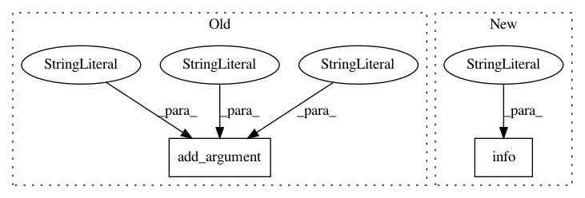

c81d831a6876f451d830541826fb581b25759c3f,alpha.py,,,#,238
Before Change
help="use subsampling to reduce grid search time [False]")
parser.add_argument("-gspct", dest="subsample_pct", type=float, default=0.25,
help="subsampling percentage for grid search")
parser.add_argument("-inter", dest="interactions", action="store_true",
help="compute feature interactions [False]")
parser.add_argument("-label", dest="test_labels", action="store_true",
help="test labels are available [False]")
parser.add_argument("-name", dest="project", default="project",
help="unique project name")
After Change
logger.info("drop = %s", args.drop)
logger.info("esr = %d", args.esr)
logger.info("features [X] = %s", args.features)
logger.info("fsample_pct = %d", args.fsample_pct)
logger.info("gp_learn = %d", args.gp_learn)
logger.info("grid_search = %r", args.grid_search)
logger.info("gs_iters = %d", args.gs_iters)
logger.info("n_estimators = %d", args.n_estimators)
In pattern: SUPERPATTERN
Frequency: 3
Non-data size: 2
Instances
Project Name: ScottfreeLLC/AlphaPy
Commit Name: c81d831a6876f451d830541826fb581b25759c3f
Time: 2016-03-06
Author: Mark.R.Conway@gmail.com
File Name: alpha.py
Class Name:
Method Name:
Project Name: apache/incubator-mxnet
Commit Name: dfa3d07a74e59297394c624a3373a335f94a64eb
Time: 2019-12-26
Author: xinyu1.chen@intel.com
File Name: example/neural_collaborative_filtering/ncf.py
Class Name:
Method Name:
Project Name: PacktPublishing/Deep-Reinforcement-Learning-Hands-On
Commit Name: b124e3be77fcd4f4a5b8ee806fd5d624a5443000
Time: 2018-01-08
Author: max.lapan@gmail.com
File Name: ch12/data_test.py
Class Name:
Method Name: